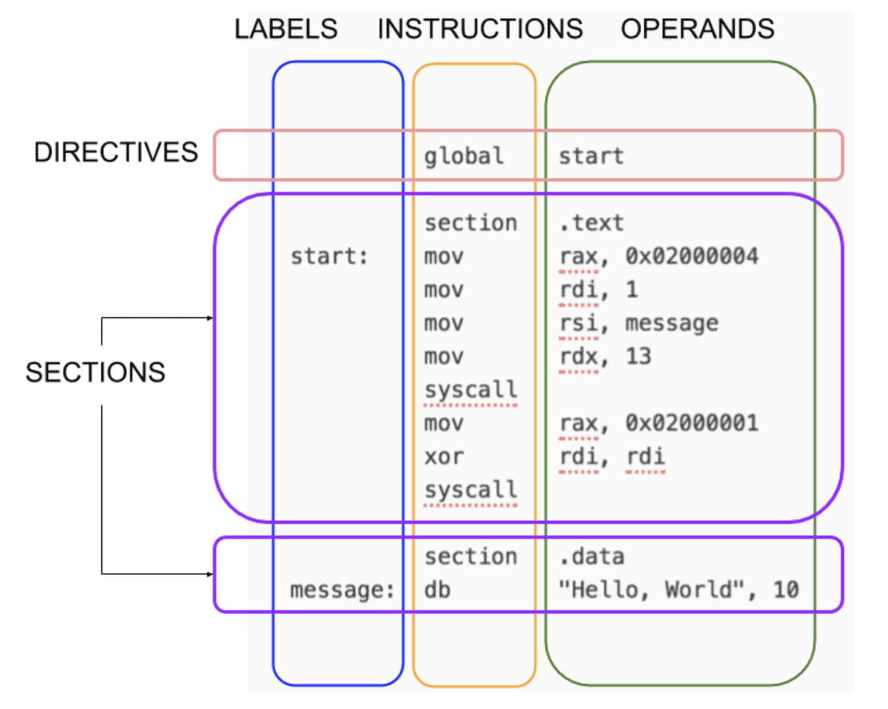
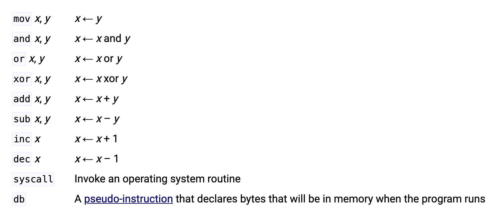

NASM 小记录
本文记录一些在使用 NASM 时遇到的常用信息，以供快速查阅之用。
NASM 程序结构

常用指令说明

寄存器
X86_64 下的可用寄存器（16 个 64 位的整型寄存器）：
- r0 (rax)：算术指令中使用的一种“累加器”。通常也作为系统调用的序号，以及返回值的容器；Accumulator；
- r1 (rcx)：用于循环控制；Cycle；
- r2 (rdx)：在输入/输出操作期间存储数据。通常也作为系统调用中参数传递寄存器（第三个参数）；Data；
- r3 (rbx)：基址寄存器，用于存放早期处理器模型中的基址；Base；
- r4 (rsp)：类似 i386 下的 esp，指向进程栈的栈顶；Stack；
- r5 (rbp)：类似 i386 下的 ebp，栈帧寄存器，默认指向旧的 rbp 的值；Stack Base；
- r6 (rsi)：字符串操作命令中的源索引；通常也作为系统调用中参数传递寄存器（第二个参数）；Source Index；
- r7 (rdi)：字符串操作命令中的目标索引；通常也作为系统调用中参数传递寄存器（第一个参数）；Destination Index；
- r8 - r15：通常用于存储临时变量；
AMD64 ABI 调用规范
- 一定范围个数的参数通过寄存器传递，整数：rdi / rsi / rdx / rcx / r8 / r9，浮点数：xmm0 / xmm1 / xmm2 / xmm3 / xmm4 / xmm5 / xmm6 / xmm7；
- 多余的参数通过栈传递，从右到左。由调用者来清理栈；
- 当参数传递完毕后，函数被调用，[rsp] 指向函数返回地址，[rsp + 8] 指向栈空间中的第一个传入的参数（rbp 没有被应用）；
- rsp 在函数调用前需满足 16-byte 的内存边界对齐；
- Callee-saved 寄存器 rbx \ rbp \ r12-r15 必须由被调用方保存状态，并在结束前重置（指如果在函数调用过程中被修改的话。其中 rbp 不推荐使用）；
- 被调用方还应该保存 XMCSR 和 x87 控制字的控制位，但是 x87 指令在 64 位代码中很少见，因此不必太担心这一点；
- 整数返回值可以存放在 rax 或 rdx + rax 中，浮点值存放在 xmm0 或 xmm1 + xmm0 中；
（待更新）